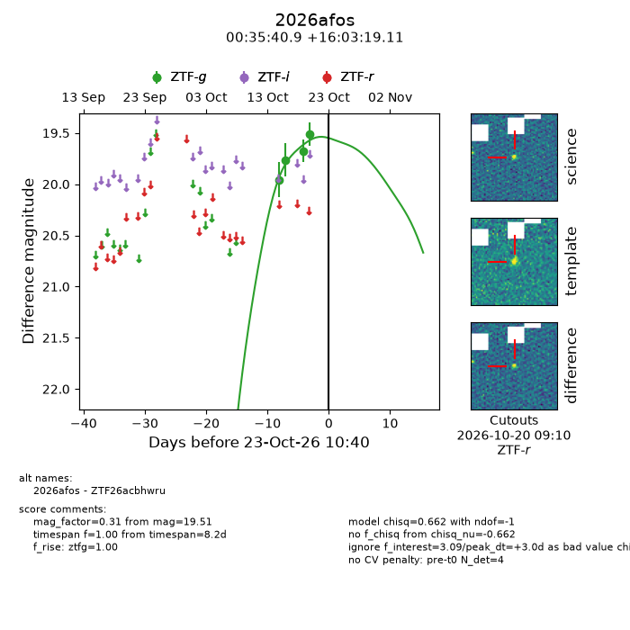
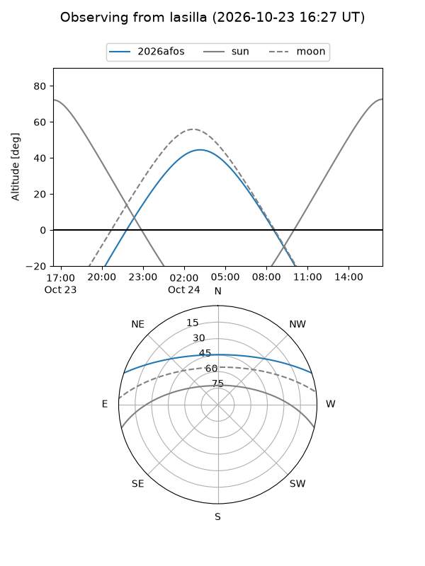
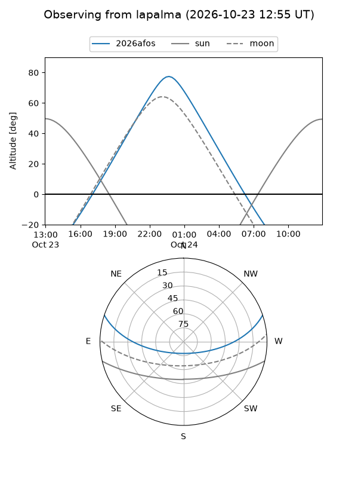
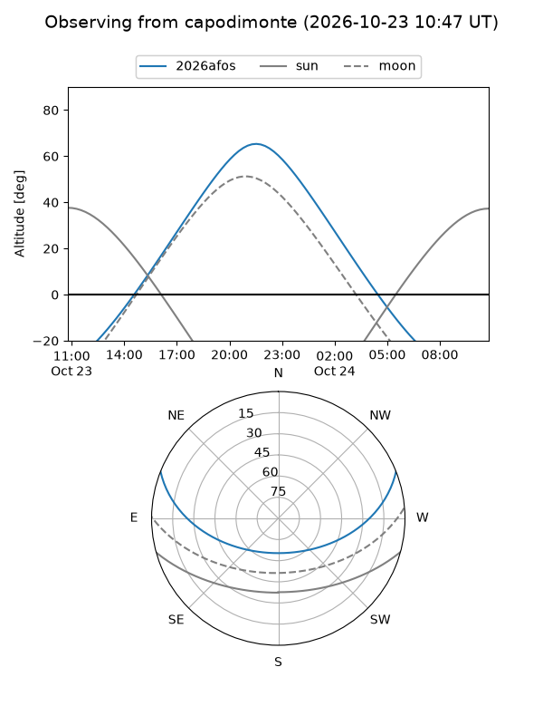
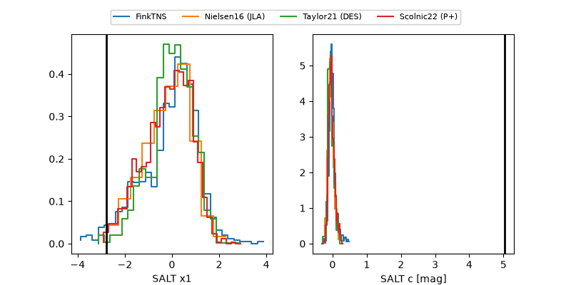

2026afos
Target 2026afos at 2026-10-23 10:42
Aliases and brokers:
FINK-ZTF: ztf.fink-portal.org/ZTF26acbhwru
Lasair-ZTF: lasair-ztf.lsst.ac.uk/objects/ZTF26acbhwru
ALeRCE-ZTF: alerce.online/object/ZTF26acbhwru
YSE-PZ: ziggy.ucolick.org/yse/transient_detail/2026afos
TNS name: wis-tns.org/object/2026afos
Direct TNS query: direct search
alt names
ZTF26acbhwru (ztf,fink_ztf)
2026afos (tns,yse)
Coordinates:
equatorial (ra, dec) = 8.9206,+16.05531
equatorial (HMS+DMS) = 00:35:40.93,+16:03:19.11
galactic (l, b) = (117.4137,-46.64756)
Flags:
peak dt: +3.0
Photometry:
last ztfg=19.51
4 ztfg detections
Lightcurve

Visibility



Additional plots
